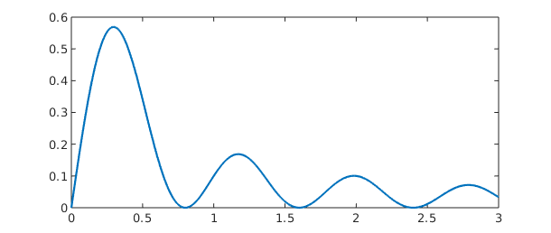
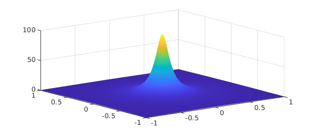
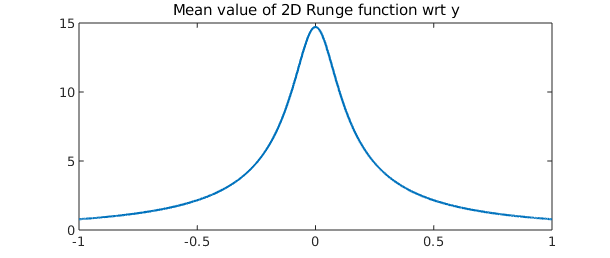
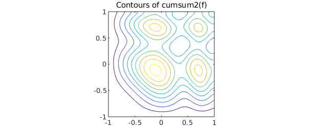

3.1 Zero contours
Chebfun2 comes with the capability to compute the zero contours of a function of two variables. For example, we can compute a representation of Trott's curve, an example from algebraic geometry [Trott 1997].
x = chebfun2(@(x,y) x); y = chebfun2(@(x,y) y); trott = 144*(x.^4+y.^4)-225*(x.^2+y.^2) + 350*x.^2.*y.^2+81; r = roots(trott); LW = 'linewidth'; MS = 'markersize'; plot(r,LW,1.6), axis([-1 1 -1 1]), axis square

The zero curves are represented as complex valued chebfuns (see Chapter 2 of the guide). For example,
r(:,1)
ans =
chebfun column (1 smooth piece)
interval length endpoint values
[ -1, 1] 604 complex values
Epslevel = 1.000000e-05. Vscale = 1.000012e+00.
The zero contours of a function are computed by Chebfun2 to plotting accuracy and they are typically not accurate to machine precision.
3.2 roots
Chebfun2 also comes with the capability of finding zeros of bivariate systems, i.e., the solutions to $f(x,y) = g(x,y) = 0$. If the roots command is supplied with one chebfun2, it computes the zero contours of that function, as in the last section. However, if it is supplied with two chebfun2 objects, as in roots(f,g), then it computes the roots of the bivariate system. Generically, these are isolated points.
What points on the Trott's curve intersect with the circle of radius $0.9$?
g = chebfun2(@(x,y) x.^2 + y.^2 - .9^2); % circle of radius 0.9 r = roots(trott,g); plot(roots(trott),'b',LW,1.6), hold on plot(roots(g),'r',LW,1.6) plot(r(:,1),r(:,2),'.k',LW,1.6,MS,20) % point intersections axis([-1 1 -1 1]), axis square, hold off

The solution to bivariate polynomial systems and intersections of curves, are typically computed to full machine precision.
3.3 Intersections of curves
The problem of determining the intersections of real parameterised complex curves can be expressed as a bivariate rootfinding problem. For instance, here are the intersections between the 'splat' curve [Guettel Example 2010] and a 'figure-of-eight' curve.
t = chebfun('t',[0,2*pi]);
sp = exp(1i*t) + (1+1i)*sin(6*t).^2; % splat curve
figof8 = cos(t) + 1i*sin(2*t); % figure of eight curve
plot(sp,LW,1.6), hold on
plot(figof8,'r',LW,1.6), axis equal
d = [0 2*pi 0 2*pi];
f = chebfun2(@(s,t) sp(t)-figof8(s),d); % rootfinding
r = roots(real(f),imag(f)); % calculate intersections
spr = sp(r(:,2));
plot(real(spr),imag(spr),'.k',MS,20)
hold off

Chebfun2 rootfinding is based on an algorithm described in [Nakatsukasa, Noferini & Townsend 2013].
3.4 Global optimisation: max2', 'min2', andminandmax2`
Chebfun2 also provides functionality for global optimisation. Here is a non-trivial example, where we plot the computed minimum and maximum as black dots.
f = chebfun2(@(x,y) sin(30*x.*y) + sin(10*y.*x.^2) + exp(-x.^2-(y-.8).^2)); [mn mnloc] = min2(f); [mx mxloc] = max2(f); plot(f), hold on plot3(mnloc(1),mnloc(2),mn,'.k',MS,40) plot3(mxloc(1),mxloc(2),mx,'.k',MS,30) zlim([-6 6]), hold off

If both the global maximum and minimum are required, it is roughly twice as fast to compute them at the same time by using the minandmax2 command. For instance,
tic; [mn mnloc] = min2(f); [mx mxloc] = max2(f); t=toc;
fprintf('min2 and max2 separately = %5.3fs\n',t)
tic; [Y X] = minandmax2(f); t=toc;
fprintf('minandmax2 command = %5.3fs\n',t)
min2 and max2 separately = 0.387s minandmax2 command = 0.233s
For high accuracy the commands MIN2, MAX2, and MINANDMAX2 require the Optimisation Toolbox in MATLAB.
3.5 Critical points
The critical points of smooth function of two variables can be located by finding the zeros of $\partial f/ \partial y = \partial f / \partial x = 0$. This is a rootfinding problem. For example,
f = chebfun2(@(x,y) (x.^2-y.^3+1/8).*sin(10*x.*y)); r = roots(gradient(f)); % critical points plot(roots(diff(f,1,2)),'b',LW,1.6), hold on % plot zero contours of f_x plot(roots(diff(f)),'r') % plot zero contours of f_y plot(r(:,1),r(:,2),'k.','MarkerSize',30) % plot extrema axis square

There is a new command here called gradient that computes the gradient vector and represents it as a chebfun2v object. The roots command then solves for the isolated roots of the bivariate polynomial system represented in the chebfun2v representing the gradient. For more information about the gradient command see Chapter 4 of this guide.
3.6 Infinity norm
The $\infty$-norm of a function is the maximum absolute value in its domain. It can be computed by passing an optional argument to the norm command.
f = chebfun2(@(x,y) sin(30*x.*y)); norm(f,inf)
ans = 0.999999999999997
3.8 References
[Guettel Example 2010] S. Guettel, http://www2.maths.ox.ac.uk/chebfun/examples/geom/html/Area.shtml
[Nakatsukasa, Noferini & Townsend 2013] Y. Nakatsukasa, V. Noferini and A. Townsend, Computing the common zeros of two bivariate functions via Bezout resultants, Numerische Mathematik, to appear.
[Trott 2007] M. Trott, Applying Groebner Basis to Three Problems in Geometry, Mathematica in Education and Research, 6 (1997), pp.15-28.